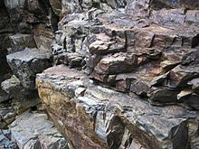

Rock (Geology) 🗻
A rock is any naturally occurring solid mass or aggregate of minerals or mineraloid matter. It is categorized by the minerals included, its chemical composition and the way in which it is formed. Rocks are usually grouped into three main groups: igneous rocks, metamorphic rocks and sedimentary rocks. Rocks form the Earth's outer solid layer, the crust.
Igneous rocks are formed when magma cools in the Earth's crust, or lava cools on the ground surface or the seabed. The metamorphic rocks are formed when existing rocks are subjected to such large pressures and temperatures that they are transformed—something that occurs, for example, when continental plates collide. The sedimentary rocks are formed by diagenesis or lithification of sediments, which in turn are formed by the weathering, transport, and deposition of existing rocks.
The scientific study of rocks is called petrology, which is an essential component of geology.
Classification
Rocks are composed of grains of minerals, which are homogeneous solids formed from a chemical compound arranged in an orderly manner. [3][page needed] The aggregate minerals forming the rock are held together by chemical bonds. The types and abundance of minerals in a rock are determined by the manner in which it was formed.
Most rocks contain silicate minerals, compounds that include silicon oxide tetrahedra in their crystal lattice, and account for about one-third of all known mineral species and about 95% of the earth's crust. [4] The proportion of silica in rocks and minerals is a major factor in determining their names and properties.
Rocks are classified according to characteristics such as mineral and chemical composition, permeability, texture of the constituent particles, and particle size. These physical properties are the result of the processes that formed the rocks. [6] Over the course of time, rocks can transform from one type into another, as described by a geological model called the rock cycle. This transformation produces three general classes of rock: igneous, sedimentary and metamorphic.
Those three classes are subdivided into many groups. There are, however, no hard-and-fast boundaries between allied rocks. By increase or decrease in the proportions of their minerals, they pass through gradations from one to the other; the distinctive structures of one kind of rock may thus be traced gradually merging into those of another. Hence the definitions adopted in rock names simply correspond to selected points in a continuously graduated series.